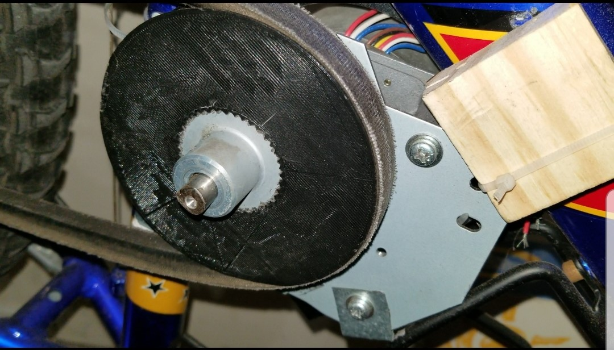
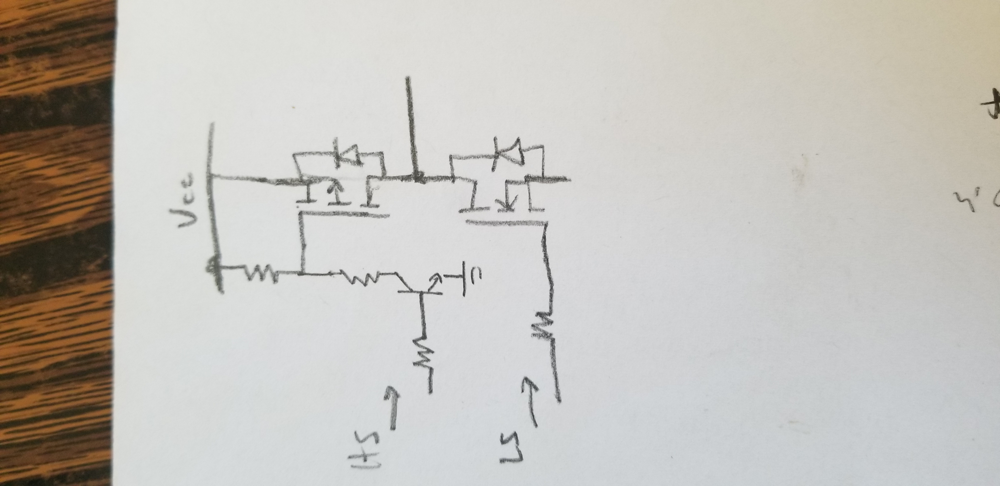
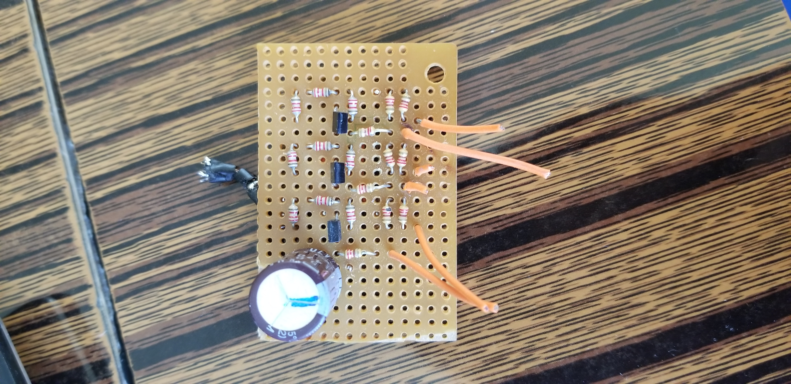

Intro
Ebikes are bicycles with an electric motor. Very popular during COVID. I want one.
Problem/Inspiration
I found a large commercial inkjet printer that was being scrapped, so I decided to open it up to see if there was anything worth salvaging.
Indeed, printers are a great source of motors, and being an industrial-grade one, there are some fairly BIG motors. Specifically, the motor
driving the ink pump was a sensored brushless motor as big as my hand and had a built in 8:1 gearbox that gave it lots of torque. This should be interesting.
The Process
The plan was simple: 1. Design some pulleys and a drive system for a bike 2. Build a motor controller.
We start with some mechanical design stuff: a 2:1 V-belt reduction system. Why a V-belt? Cause that's what I had lying around.
3D printed pulleys are pretty strong if they are being driven (typically because there's less force on them), but designing a driver pulley
to be 3D printed was fairly difficult, as that pulley had to withstand a lot of force. The original design of the driver pulley directly mounted
to the D-shaft of the motor, which was pretty dumb in hindsight because PLA plastic is pretty soft compared to metal and there's a whole lot of force
on the surrounding PLA when the motor is doing its job. So the D-hole quickly lost its "D" shape and I had to go back to the drawing board. My next idea
was to design a pulley that would directly fit over the metal toothed pulley wheel that originally came with the motor.

Mechanical stuff done, let's do electrical. So I reused the MOSFETs originally found in the motor driver that was paired with that ink pump motor
and created my own sensored 3 phase H-bridge brushless motor controller. The motor driver in the printer did not have any proper gate drivers present that I could reuse.
The high side switches were logic-level PMOS and the low side switches were logic-level NMOS directly driven by the microcontroller. Hey, if a
commercial product used this method, I should be able to use this method as well. Under this assumption, I proceeded to create what was probably the worst motor controller
ever made. Take a look at the schematic of a single half-bridge and the remains of my board.


Writing this as a more knowledgeable 19 year old, I realized that the ink pump motor didn't need to be particularly efficient or high-performing, so driving MOSFET gates through
resistors and pull-up resistors was more than enough. However, this won't work for a ebike controller. Ebike controllers are high performance boards that either need a proper gate driver
or at the very least, a totem-pole driver (which can be built using discrete components). Nevertheless, the initial results looked pretty good:
The MOSFETs ran nice and cool, and everything seemed fine...until I tried running the motor at anything less than 100% power and the MOSFETs started to get hot. Like really hot. 19 year old me knows the reason why.
See those orange wires coming out of the board to the Arduino? Yea, those directly drive the gates of the MOSFETs. I've committed the number one taboo of driving MOSFETs,
making the connection between the MOSFET gates and the "driver" as long as physically possible. While this was sufficient at max speed (100% duty cycle, slow switching frequency = a nice factor of motor rpm), as soon as I tried
lowering the speed of the motor, the motor controller starts to do more switching (10 kHz, PWM duty cycle non-zero), the currents running in the long, parallel gate wires started inducing voltages into each other, causing random MOSFET turn ons and shoot-throughs.
But 16 year old me didn't know that at the time, so he decided to set this project aside for future me to complete.
Remarks
Future me to the rescue: Get proper gate drivers, make a proper PCB, and as a bonus, apply FOC control.